EleutherAI is proud to introduce a joint project with Cerebras on spreading the implementation details of muTransfer with the wider model training community!
We provide a simple port of μP to the popular nanoGPT library at https://github.com/EleutherAI/nanoGPT-mup, and encourage readers to refer to this implementation throughout this blog.
Introduction
Maximal Update Parameterization (μP) offers significant advantages for neural network training, but its adoption has been limited due to the complexity of the underlying math and the challenges in implementation. This guide aims to lower those barriers by providing a clear and practical overview of μP. By using μP, you can achieve stable hyperparameters (HPs) across model scales, reduce the need for costly tuning, and improve training stability at large scale. This guide will walk you through the core concepts and practical steps needed to implement μP effectively, enabling you to take full advantage of its benefits without the usual hurdles.
Why you should use μP
First we will explain why you should be using μP. There are four main benefits compared to standard parameterization (SP) models.
1. Stable optimum HPs across scale (μTransfer)
In Figure 1, Yang et al. showed that when using the standard parameterization (SP), optimal HPs vary with model width. μP reparameterizes a network such that the optimal HPs remain stable.
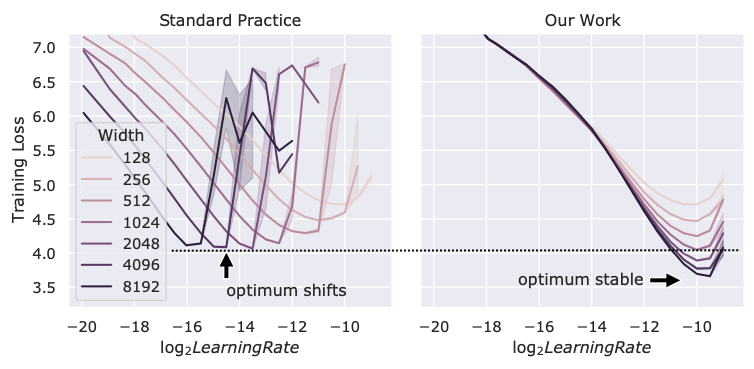
Figure 1: With μP, optimal hyperparameters are stable as width is varied (Figure 1 from Yang et al. with permission).
As a result of the HP shift when training models with SP, prior works have tested and found empirically that learning rates change as model size increases. Figure 2 shows the tuned max learning rate plotted against model width for a range of popular SP-trained large language models [GPT-3, LLaMA, Gopher, Chinchilla, Turing-NLG]. Here, the community has used very expensive manual tuning and testing to find that maximum learning rates roughly follow a ($\eta_{\text{optimal}} \propto \eta_{\text{base}} / \text{width}$) trend (similar to the μP trend!). Interestingly, the larger scale models slightly diverge from the trend. This could be indicative of sub-optimal learning rate tuning due to the prohibitively expensive tuning cost and attempts to avoid instability. By adopting μP, one can avoid much of the tuning required with SP models for free.
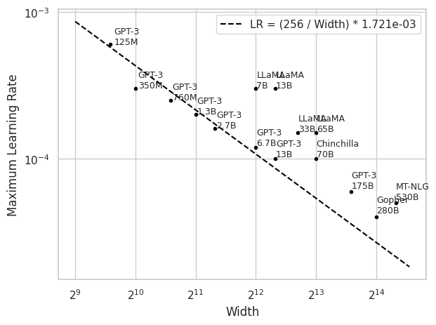
Figure 2: Learning rates for SP models have been roughly following the μP guidelines.
Since the first set of SP large language model (LLM) families, it has been commonplace to reuse the HPs of predecessors corresponding to the model size being trained. This approach inherits the poor tuning of larger scale models. Furthermore, this approach can't be used for new architectures or optimizers, so researchers must take on the burden of manual tuning themselves. The prohibitive cost of tuning makes it artificially harder for new techniques to disrupt the existing training recipes (Parameterization Lottery).
2. Improved loss at large scale due to improved HP tuning
As model size grows it becomes more expensive to perform an extensive HP search, resulting in sub-optimally tuned large models. Yang et al. showed that by performing a 200 sample random HP search with a 40M parameter model, they could use the optimal HPs on a GPT-3 6.7B run and achieve comparable performance to GPT3-13B Brown et al.. In other words, that roughly translates to a 2x compute savings to reach the same performance! Additionally, Dey et al. performed training recipe ablations with a 111M parameter model, then transferred their findings to a 3B parameter model and achieved performance comparable to contemporary 7B parameter models, while using 3.3x less training FLOPs!
3. Stable training - significantly decreased danger of instability at large scale
LLM training is notoriously prone to instability (see the OPT logbook for SP training challenges Zhang et al.). Instability can present itself in the form of NaN loss, loss spikes, and/or loss divergences. When encountering instability, simple workarounds include resuming training with a lower learning rate Zhang et al. and/or skipping the data batches around where the instability occurred Chowdhery et al..
While adopting μP does not completely solve the problem of instability, it certainly does eliminate HP selection as a major source of instability. Practitioners will still need to be mindful of precision, numerical stability, hardware failures, outlier data, etc.
4. More predictable scaling due to μTransfer
For projects involving large-scale training, it is useful to fit scaling laws and be able to accurately extrapolate the performance a model will achieve given a compute budget. Dey et al. and Yao et al. showed that μP models can achieve much tighter scaling law fits than SP models due to having consistent training dynamics and HP tuning across model scales. More accurate model performance extrapolation at large scales can help projects more reliably achieve their performance targets.
μP enables better research
The benefits of μP add up to enable better research:
μP Alleviates the "Parameterization Lottery". The techniques we develop are subject to the "Parameterization Lottery" where research ideas can win because they are suited to existing hyperparameters and not because the idea is superior to alternative research directions (Analogous to the "Hardware Lottery" (Hooker)). Standard Parameterization (SP) studies run the risk of inconclusive or unpublished negative results due to the confounding variable of HP tuning. Research using μP can more robustly compare baselines with new methods, because optimal HPs are stable across model widths.
Simple and effective large-scale training. Large-scale training runs using μP enjoy better and more predictable performance with less worry of instability wasting compute time. Furthermore, μTransfer allows HP tuning budgets to be mostly reallocated towards training something new instead.
A Simple Approach to the μP Math
At a high-level, training neural networks is similar to simulating a partial differential equation that is developing over time. We would like that "simulation" to proceed smoothly and quickly, without any instabilities. To achieve stable and compute-efficient training, we can enforce certain invariants that keep each layer stable. Here we discuss the basic building blocks for these invariants, and then how they fit into layers and full models.
Basic Building Block: Controlled Activation Magnitudes
For each function we apply to a set of activations, we would like to ensure that, in expectation, the function does not cause the distribution of those activations to scale (change magnitude) with any model architecture hyperparameters, such as hidden size. Let's start with a simple example: a fully-connected layer where input activations $x$ are multiplied by the weight matrix $W$ to produce output activations $y$.
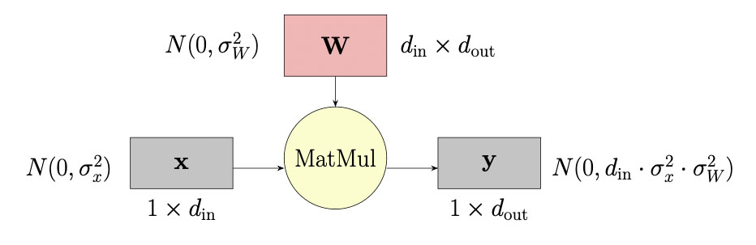
Figure 3: Simple matrix multiply example
Figure 3 diagrams the matrix multiplication, where the vector $x$ is multiplied by the weights matrix $W$ to produce vector $y$. In the matrix multiply, $x$ is dot-product multiplied by each column of $W$, so in those dot-products, each element of $x$ is first multiplied by the corresponding element in the column from $W$, and then the resulting values are reduced along $W$'s column dimension.
Suppose elements of $x$ are drawn from the normal distribution, $N(0,\sigma^2_x)$, and we multiply by matrix $W$ with elements drawn from $N(0,\sigma^2_W)$. If all activations and weights are independent, then the resulting vector $y$ will have elements drawn from $N(0,d_\text{in}\cdot\sigma^2_x\cdot\sigma^2_W)$ (for large $d_\text{in}$). If we choose $\sigma_W = 1 / \sqrt{d_\text{in}}$, then $y \sim N(0, \sigma_x^2)$. $y$ will have scale that is independent of the width of the layer! This sort of analysis may look familiar because it is used in popular initialization schemes like Glorot and Bengio and He et al..
Abstracting this a bit... If you understand the simple example above, then you're ready to abstract it toward controlling full training dynamics. The first thing to note is that if every operation in a model is controlled such that the outputs do not scale with model width, then we can change the model width without changing overall training dynamics. The "proof" of this is inductive: If a first operation controls its outputs to have consistent scale as its inputs, then when it passes its outputs to the next operation, that second operation will see well-controlled inputs, and so on. Thus, to achieve scalable training dynamics, it is sufficient to step through each operation in the model and verify that the scale of its output activations does not change with respect to changes in model width. In short: If we control the dynamics of each operation, we control the full model's training dynamics.
Operations in a training step
The example above applies to activations. However, during training we also need to ensure the same controlled behavior for gradients and weight updates. Figure 4 diagrams these three components—the forward pass, backward pass, and weight update—for a single layer in a model, where $x \in \mathbb{R}^{d_\text{in}}$, $y \in \mathbb{R}^{d_\text{out}}$, $W \in \mathbb{R}^{d_\text{in} \times d_\text{out}}$ and width multiplier $m_d = d_\text{in} / d_\text{in,base} = d_\text{out} / d_\text{out,base}$. The terms $d_\text{in,base}$, $d_\text{out,base}$ refer to the dimensions of the small "proxy model" whose HPs we would like to transfer to a large model.
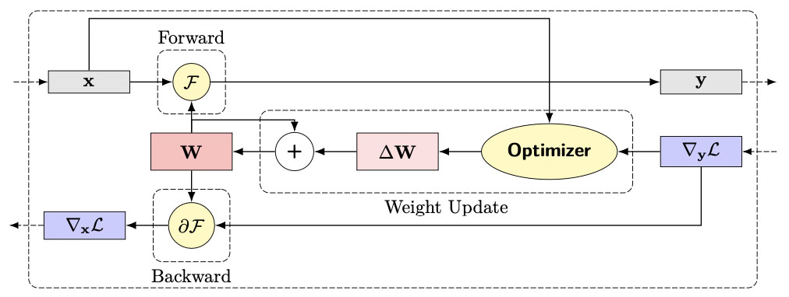
Figure 4: The three operations associated with training an individual layer with weights that perform the function, F: Forward activation calculation, backward gradient propagation, and the updates to the weights.
As we scale model width by multiplier $m_d$ in a linear layer (i.e., F is a fully-connected layer), our aim is to control:
- Forward pass: $y$ = F($x$,$W$) = $xW$
- Backward pass: $∇_x$ $\mathcal{L}$ = ($∇_y$ $\mathcal{L}$)($W$)$^{\top}$
- Effect of weight update on activations: Δ$y$ = $x$ Δ$W$
More formally, we want the norm of activations $||y|| F$, gradients $||∇_x \mathcal{L}|| F$, and the effect of the weight update on activations $||Δy||_ F$ to each be invariant to width multiplier $m_d$. We can ensure this by controlling the mean and variance of each.
To control the forward pass, we can return to our earlier example but rather than making the scale of $y$ invariant to width $d$, let's make it invariant to the change in width $m_d = d_\text{in} / d_\text{in,base}$. Then we can write $y \sim N(0,m_d · d_\text{in,base}·σ²_x·σ²_W)$ and we can choose $σ_W = 1 / \sqrt{m_d}$ to ensure $y \sim N(0,d_\text{in,base}·σ²_x)$. Phrasing things in terms of $m_d$ rather than $d$ allows us to mimic the training dynamics of some baseline model as we scale up.
Conveniently, the backward pass calculation is analogous to the forward pass, so the calculation of the gradient, $\nabla_x \mathcal{L} \sim N(0, m_d \cdot d_\text{out,base} \cdot \sigma^2_x \cdot \sigma^2_W)$, follows the same math as the forward pass (e.g., for matmul from Figure 3). For the gradient to a matrix multiplication, the only difference from the forward pass is that the reduction dimension is the output dimension of the forward layer $d_\text{out}$. We can make $|| \nabla_{x} \mathcal{L} || F$ invariant to $m_d$ by setting $\sigma_W = 1 / \sqrt{m_d}$ to ensure $y \sim N(0,d\text{out,base} \cdot \sigma^2_x)$. Typically when model width is scaled, each dimension of a hidden weight matrix is scaled equally: $m_d = d_\text{in} / d_\text{in,base} = d_\text{out} / d_\text{out,base}$. This assumption of equal scaling allows the same initialization $\sigma_W = 1 / \sqrt{m_d}$ to control both the forward and backward passes, even for a rectangular weight matrix.
The last part of a layer that needs to be controlled is the weight update. The optimizer takes the gradient, the forward activations, and uses its internal state to calculate the weight update. The magnitude of the weight update is controlled by the learning rate, which we will use to ensure we maximally update the weights in expectation throughout training while maintaining stability. Calculating the correct learning rate for the weight update is a little trickier than the activation and gradient, because we need to estimate the scale of activations, $y$, on the next training step. Namely, we want to choose the learning rate η on training step $t = 1$, so that the output activations on the second training step ($y_2$) have well-controlled size. Once again, assuming F is a simple matrix multiplication:
$$ y_2 = x_2 W_1 = x_2(W_0 + ΔW_0) = x_2(W_0 + \eta · \text{opt}({∇{W_0}} \mathcal{L})) = x_2 W_0 + \eta · x_2 \text{opt}(x_1 {∇{y_1}} \mathcal{L}^\top) \tag{1} $$
Since we have already controlled $x_2 W_0$ with the initialization above, we only need to consider the change due to the weight update; $η· x_2 \text{opt}(x_1 {∇{y_1}} \mathcal{L}^\top)$ must scale independently of the model's width. Here again, this calculation is structured analogously to the matrix multiply example in Figure 3. Unlike the simple example, however, the weight update and the forward activations on the second training step are no longer independent. They will have covariance, because $x_1$ and $x_2$ are drawn from the same distribution. Thus, the expectation of their dot-product ( $ \mathbb{E}[\eta\cdot x_2 \text{opt}(x_1 \nabla{y_1}\mathcal{L}^\top)] $ ) is likely to be non-zero. In fact, by the Law of Large Numbers, this dot-product can be shown to grow proportionally to the change in width $\mathbb{E}[\eta \cdot x_2\text{opt}(x_1 \nabla_{y_1}\mathcal{L}^\top)] \propto \eta m_d$. Thus, to control the weight update in expectation, we can$^1$ set $η = 1 / m_d$. This derivation applies to both Stochastic Gradient Descent (SGD) and Adam optimizers, but note that accounting for optimizer transformations can be tricky, so we spare the reader from the complexity here$^2$.
Summary: For training, μP controls the forward and backward pass operations with weight initialization, and it controls the weight update using learning rate scaling.
For a more detailed derivation, refer to the Appendix.
Practitioner's guide to μP
In this section we will explain how to implement, verify, and use μP for a transformer language model.
Implementation
The implementation is actually quite straightforward. Table 1 summarizes the necessary adjustments to implement μP for a Transformer with tied embeddings. It is common for research groups to work off of complex training codebases (e.g. Megatron-LM, GPT-NeoX, DeepSpeed, timm) which makes it difficult to adopt the original μP library. Internally, we found it simple to integrate μP into our existing code bases by making targeted changes to our code following Table 1. Here $m_d = d / d_\text{base}$ is the width multiplier and $d_{\text{head}}$ is the dimension of each attention head (typically 64 or 128). No additional corrections are needed for biases or layer-norm layers.
| Parameterization | SP | μP |
|---|---|---|
| Embedding Init. Var. | $σ_\text{base}^2$ | $σ_\text{base}^2$ |
| Embedding LR | $η_\text{base}$ | $η_\text{base}$ |
| Embedding Fwd. | $x W_\text{emb}$ | $\mathbf{\alpha_\text{input}} · x W_\text{emb}$ |
| Hidden Init. Var. | $σ_\text{base}^2$ | $σ_\text{base}^2 / \mathbf{m_d}$ |
| Hidden LR (Adam) | $η_\text{base}$ | $η_\text{base} / \mathbf{m_d}$ |
| Output Logit Fwd. | $x W_\text{emb}^\top$ | $\mathbf{\alpha_\text{output}} · x W_\text{emb}^\top / \mathbf{m_d}$ |
| Attention logits | $Q^\top K / \sqrt{d_{\text{head}}}$ | $Q^\top K / \mathbf{d_\text{head}}$ |
Table 1: Summary of SP and μP differences for a decoder-only transformer trained with Adam. Bold terms are unique to μP
The learning rate $η$ and initialization variance $σ_W^2$ of each hidden layer are scaled by $1 / m_d$, as we covered in the previous section. The attention logits are scaled by $1 / d_{\text{head}}$ instead of $1 / \sqrt{d_{\text{head}}}$ to account for correlation between $Q$ and $K$ that emerges during training. To support tied embedding weights, the embedding initialization must be the same as the unembedding initialization. To ensure proper scales of activations, the output logit forward pass is scaled by $1/m_d$ because the dot product reduces along $d_\text{model} = m_d d_\text{base}$ elements to produce a $d_\text{vocab}$-dimensional output. Finally, $α_\text{input}$ and $α_\text{output}$ are tunable scalars that can account for differences in embedding activation scales not proportional to $m_d$, such as changing the vocab size $d_\text{vocab}$.
To find the optimal HPs, one must tune $α_\text{input}$, $α_\text{output}$, $η_\text{base}$, and $σ^2_\text{base}$. One could also add tunable scalar parameters anywhere else in the model, as long as they are fixed as $m_d$ varies.
To provide a concrete reference point, we also created a NanoGPT implementation which includes working examples of verifying and using μP: https://github.com/EleutherAI/nanoGPT-mup. This codebase produced each of the figures in this section.
Coordinate check test
The coordinate check test is a simple and cheap way to test your implementation and should be your first verification step.
As we explained in the previous section, the goal of μP is to ensure the magnitude of the distribution of all activations is independent of any change in model width. To achieve this, activations must be controlled at initialization and after every training step. The coordinate check test involves training models of different widths for 10 steps. During each training step, we record the average size of activations for each layer type.
Our NanoGPT reference implementation includes a working example of the coordinate check test (see https://github.com/EleutherAI/nanoGPT-mup) which produces all our coordinate check figures. In our coordinate check, we plot the mean absolute activation value, averaged across all layers of that type. This metric implicitly tests that both the mean and variance of activations are independent of change in model width. Note that typically the mean activation value is zero so one could simplify the y-axis further and only plot the variance of activations. Plotting the mean and variance separately could help debug more nuanced issues. We train a two layer GPT-2 model for ten steps for several different widths and five seeds.
First we perform the coordinate check for an SP model. Figure 5 shows that at each training step, activation size increases proportionally to model width. This is the source of optimum HP shift and instability in SP models.
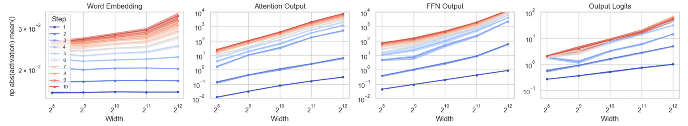
Figure 5: Coordinate check for SP
Next we modify our parameterization to include the μP adjustments for hidden weight initialization variance: $σ^2_{μP} = σ^2_\text{base} / m_d$. Figure 6 shows this adjustment controls the size of hidden activations at initialization but after each weight update, activation size grows proportionally to model width.
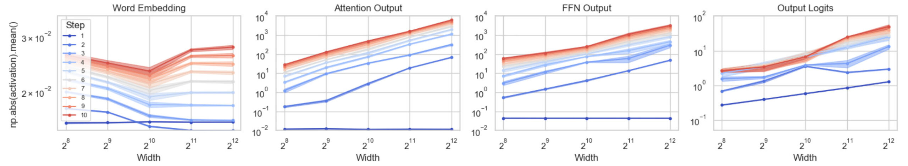
Figure 6: Coordinate check for SP with μP hidden init. var. ($\sigma_{\mu P}^2 = \sigma_\text{base}^2 / m_d$)
Next we modify our parameterization to include the μP adjustments for hidden learning rate: $η_{μP} = η_\text{base} / m_d$. Figure 7 shows these adjustments now ensure the size of hidden activations do not scale proportionally to model width, but the output logit scale still grows.
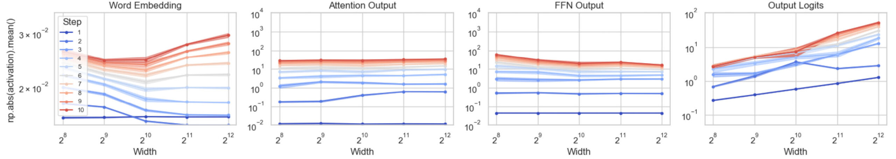
Figure 7: Coordinate check for SP with μP hidden init. var. ($\sigma_{\mu P}^2 = \sigma_\text{base}^2 / m_d$) and $\mu P$ hidden LR ($\eta_{\mu P} = \eta_\text{base} / m_d$)
Next we modify our parameterization to include a partial μP adjustment for output logits: $y_\text{logits} = x W_\text{emb}^\top / \sqrt{m_d}$ (note the use of $\sqrt{m_d}$ rather than $m_d$). Figure 8 shows these adjustments control the output logit scale at initialization, but there is still growth after a few steps.
Figure 8: Coordinate check for SP with μP hidden init. var. ($\sigma_{\mu P}^2 = \sigma_\text{base}^2 / m_d$) and $\mu P$ hidden LR ($\eta_{\mu P} = \eta_\text{base} / m_d$) and a partial $\mu P$ adjustment for output logits ($y_\text{logits} = x W_\text{emb}^\top / \sqrt{m_d}$)
The $1/\sqrt{m_d}$ output logit multiplier is only suitable for the beginning of training where activations aren't correlated yet. During later training, activations will correlate with weights, so a $1/m_d$ output logit multiplier is required, and we use this multiplier throughout training. Next we modify our parameterization to include this full μP adjustment for output logits: $y_\text{logits} = x W_\text{emb}^\top / m_d$. Figure 9 shows these adjustments now pass the coordinate check test - the size of activations does not scale proportionally to model width!
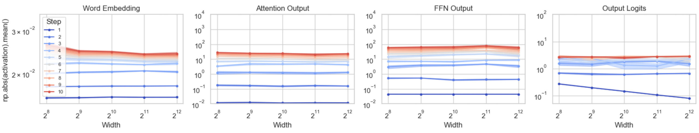
Figure 9: Coordinate check for SP with μP hidden init. var. ($\sigma_{\mu P}^2 = \sigma_\text{base}^2 / m_d$) and $\mu P$ hidden LR ($\eta_{\mu P} = \eta_\text{base} / m_d$) and the $\mu P$ adjustment for output logits ($y_\text{logits} = x W_\text{emb}^\top / m_d$)
Finally, there is one more modification prescribed by μP: $y_{\text{attn logits}} = Q^\top K / d_{\text{head}}$. The reasoning for this change is similar to the output logits multiplier: The keys and queries in the model are likely to rotate to align later in training. We modify our parameterization to include this and show in Figure 10 that this has minimal effect. This is because this attention logit adjustment is meant to counteract the correlation of Q and K that emerges later into training.
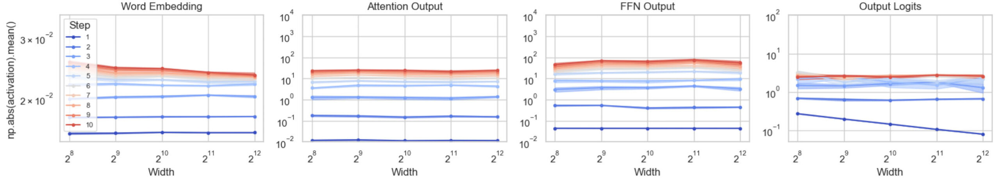
Figure 10: Coordinate check for $\mu P$
μTransfer test
The μTransfer test examines whether optimum HPs are stable when model width is varied (Figure 1). Once your coordinate check tests are looking good, we recommend running a μTransfer test as a final integration test. Our NanoGPT reference implementation includes a working example of the μTransfer test which produces Figures 11 and 12.
We test learning rate transfer on the openwebtext dataset. We again use two-layer GPT-2 models trained on 33M tokens with four different model widths and three seeds each using NVIDIA A100 GPU instances. Figure 11 shows the optimal learning rate remains stable as we vary model width for μP, unlike the SP models.
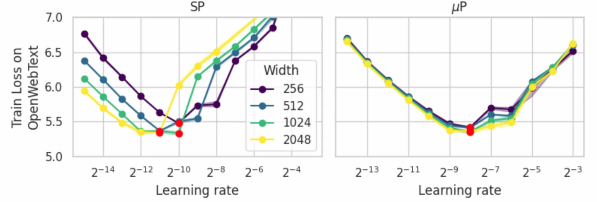
Figure 11: μTransfer learning rate test on 33M tokens from the openwebtext dataset.
We also include an even smaller scale test that can run on an Apple M1 Pro chip overnight. We train two-layer GPT-2 models for 1 epoch of the shakespeare_char dataset (1M tokens) with four different model widths and three seeds each. Figure 12 shows the optimal learning rate remains stable as we vary model width for μP, unlike the SP models.
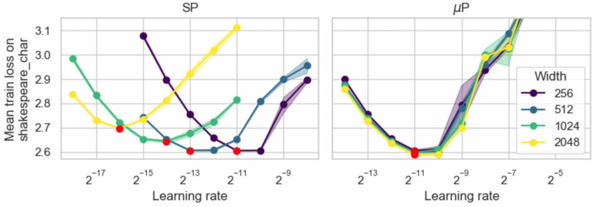
Figure 12: μTransfer learning rate test on 1M tokens from the shakespeare_char dataset.
Transferring optimal HPs from a small scale to a large scale
Once you have validated your μP implementation through coordinate check and μTransfer tests, you are finally ready to use μP to improve large scale training runs. You can perform a random HP search over a small “proxy model”. Following Yang et al. 2021, we choose a hidden size of 256 to ensure a large-enough scale for the law of large numbers and central limit theorem to converge. We choose depth roughly equivalent to the large scale to mitigate the effect of depth shifting the optimum HPs as per Yang et al. 2023. We train our small proxy model for 20 tokens per parameter (following Hoffmann et al.) and perform a random search over four HPs: base initialization standard deviation $\sigma_\text{base}$, base learning rate $\eta_\text{base}$, embedding multiplier $\alpha_{\text{input}}$, and output logit multiplier $\alpha_{\text{output}}$. Note that one could also define additional tunable scalar multiple hyperparameters. We find that if the proxy model is trained with a batch size smaller than the critical batch size (McCandlish et al.), learning rate transfer to a large model trained at or above the critical batch size will be sub-optimal. Therefore it is important to train your proxy model with a large enough batch size. Anecdotally, Cerebras has observed excellent transfer across datasets, echoing the dataset transfer results of Yang et al. 2021. Finally we recommend re-tuning your HPs whenever you make a change to your model architecture (e.g. attention algorithm, nonlinearity, position embeddings, vocabulary size) or training procedure (e.g. learning rate schedule).
Conclusion
We hope this post has convinced you that μP is worth implementing and reduced the barriers for you to adopt it! We believe wider adoption and study of μP can raise the bar for deep learning research by helping to alleviate the Parameterization Lottery.
Citation
To cite our work, please use:
@misc{cerebras2024mupguide,
author = {Dey, Nolan and Anthony, Quentin and Hestness, Joel},
title = {{The practitioner’s guide to the maximal update parameterization}},
month = September,
year = 2024,
howpublished = {\url{https://www.cerebras.ai/blog/the-practitioners-guide-to-the-maximal-update-parameterization}},
url = \url{https://www.cerebras.ai/blog/the-practitioners-guide-to-the-maximal-update-parameterization},
}
Footnotes
-
If $ \mathbb{E}[\eta\cdot x_2 \text{opt}(x_1 \nabla_{y_1}\mathcal{L}^\top)]=0 $ and we instead had to control the variance, then $\eta=1/\sqrt{m_d}$ would be the appropriate scaling. See Section 2.4 from Everett et al. for a good discussion on this.
-
Sometimes, SGD optimizers will formulate the weight update to divide the gradient by the hidden size. By dividing out hidden size here, the learning rate correction for SGD will not need to contain a hidden size term. In particular, Yang et al. use this formulation for their derivation.
Appendix
A more thorough math explanation
Throughout this section, we add a batch dimension $b$ to $x$ and $y$ such that $X \in \mathbb{R}^{b \times d_\text{in}}$ and $Y \in \mathbb{R}^{b \times d_\text{out}}$.
Forward pass at initialization
The first stage where we would like to control training dynamics is in the layer's forward function. We can write the forward pass as:
$$ Y_{ij} = [ XW ] {ij} = \sum{k=1}^{d_\text{in}} X_{ik} W_{kj} \tag{2} $$
Our goal is to ensure $|| Y ||_ F$ is invariant to changes in width $m_d$. To achieve this we can ensure the expected mean and variance of elements of $Y$ are invariant to $m_d$.
Mean: As expectation is linear and $X$ and $W$ are independent at initialization:
$$ \mathbb{E}[Y_{ij}] = \mathbb{E}[ \sum_{k=1}^{d_\text{in}} X_{ik} W_{kj} ] = \sum_{k=1}^{d_\text{in}} \mathbb{E}[ X_{ik} W_{kj} ] = \sum_{k=1}^{d_\text{in}} \mathbb{E}[ X_{ik}] \mathbb{E}[ W_{kj} ] = \sum_{k=1}^{d_\text{in}} \mathbb{E}[ X_{ik}] (0) = 0 \tag{3} $$
Therefore, since at initialization $\mathbb{E}[W_{kj}]=0$, $\mathbb{E}[Y_{ij}] = 0$ and the mean is controlled.
Variance: As the terms are independent and each weight element is IID:
$$ \text{Var}(Y_{ij}) = \text{Var}\left(\sum_{k=1}^{d_\text{in}} X_{ik} W_{kj}\right) = \sum_{k=1}^{d_\text{in}} \text{Var}(X_{ik} W_{kj}) \tag{4} $$
Then, since $X$ and $W$ are independent at initialization:
$$ \text{Var}(Y_{ij}) = \sum_{k=1}^{d_\text{in}} \big(\text{Var}(X_{ik}) + \mathbb{E}[X_{ik}]^2\big) \big(\text{Var}(W_{kj}) + \mathbb{E}[W_{kj}]^2\big) - \big(\mathbb{E}[X_{ik}]\mathbb{E}[W_{kj}]\big)^2 \tag{5} $$
Finally, since at initialization $\mathbb{E}[W_{kj}]=0$ and redefining $\text{Var}(W_{kj}) = \sigma^2_{W}$:
$$ \text{Var}(Y_{ij}) = \sum_{k=1}^{d_\text{in}} \sigma^2_{W}\big(\text{Var}(X_{ik}) + \mathbb{E}[X_{ik}]^2\big) = d_\text{in} \sigma^2_{W} \big(\text{Var}(X) + \mathbb{E}[X]^2\big) \tag{6} $$
Rewriting in terms of width multiplier $m_d = \dfrac{d_\text{in}}{d_\text{in,base}}$:
$$ \text{Var}(Y_{ij}) = m_d d_\text{in,base} \sigma^2_{W} \big(\text{Var}(X) + \mathbb{E}[X]^2\big) \tag{7} $$
Solution: To ensure $\text{Var}(Y_{ij})$ scales independently of $m_d$, we choose to set $\sigma^2_{W} = \dfrac{\sigma_{W,base}^2}{m_d}$. This ensures that $|| Y ||_ F$ is invariant to changes in width $m_d$.
Backward gradient pass at initialization
The next stage where we would like to control training dynamics is the layer's backward pass. We can rewrite the backward pass as:
$$ \big[ \nabla_{X} \mathcal{L} \big] {ij} = \big[( \nabla{Y} \mathcal{L}) (W)^\top \big] {ij} = \sum{k=1}^{d_\text{out}} \nabla_{Y} \mathcal{L} {ik} W{jk} \tag{8} $$
Our goal is to ensure $|| \nabla_{X} \mathcal{L} ||F$ is invariant to changes in width $m_d$. To achieve this, we can ensure the expected mean and variance of elements of $\nabla {X} \mathcal{L}$ are invariant to $m_d$.
Mean: As expectation is linear and $X$ and $W$ are (roughly) independent at initialization:
$$\mathbb{E}\big[\nabla_{X} \mathcal{L} {ij}\big] = \mathbb{E}\left[\sum{k=1}^{d_\text{out}} \nabla_{Y} \mathcal{L} {ik} W{jk}\right] = \sum_{k=1}^{d_\text{out}} \mathbb{E}\big[\nabla_{Y} \mathcal{L} {ik}W{jk}\big] = \sum_{k=1}^{d_\text{out}} \mathbb{E}\big[\nabla_{Y} \mathcal{L} {ik}\big] \mathbb{E}\big[W{jk}\big] \tag{9} $$
Therefore, since at initialization $\mathbb{E}[W_{jk}]=0$, $\mathbb{E}[\nabla_ {X} \mathcal{L}_ {ij}] = 0$, and the mean is controlled.
Variance: As the terms are independent and each weight element is IID:
$$ \text{Var}\big(\nabla_{X} \mathcal{L} {ij}\big) = \text{Var}\left(\sum{k=1}^{d_\text{out}} \nabla_{Y} \mathcal{L} {ik} W{jk}\right) = \sum_{k=1}^{d_\text{out}} \text{Var}\big(\nabla_{Y} \mathcal{L} {ik} W{jk}\big) \tag{10} $$
From the backward pass mean derivation, we know $\mathbb{E}\big[\nabla_{Y} \mathcal{L} {ij}\big]=0$. Then, similar to the forward pass variance derivation, we can simplify using the fact that at initialization, $\nabla{Y} \mathcal{L}$ and $W$ are (roughly) independent and $\mathbb{E}[W]=0$. Similarly we can also define $\text{Var}\big(W_{kj}\big) = \sigma^2_{W}$ and rewrite in terms of width multiplier $m_d = \dfrac{d_\text{out}}{d_\text{out,base}}$:
$$ \text{Var}\big(\nabla_{X} \mathcal{L} {ij}\big) = m_d d{\text{out,base}} \sigma^2_{W}\text{Var}(\nabla_{Y} \mathcal{L}) \tag{11} $$
Solution: To ensure $\text{Var}\big(\nabla_{X} \mathcal{L} {ij}\big)$ scales independently of $m_d$, we choose to set $\sigma^2{W} = \dfrac{\sigma_{W,base}^2}{m_d}$. This ensures that $|| \nabla_{X} \mathcal{L} {ij} || _ F$ is invariant to changes in width $m_d$. Typically when model width is scaled, each dimension of a hidden weight matrix is scaled equally: $m_d = \dfrac{d\text{in}}{d_\text{in,base}} = \dfrac{d_\text{out}}{d_\text{out,base}}$. This assumption of equal scaling allows the same initialization $\sigma_W \propto 1 / \sqrt{m_d}$ to control both the forward and backward passes, even for a rectangular weight matrix.
Effect of weight update on activations
We desire that the Frobenius norm of the effect of the weight update on activations, $||\Delta Y||_ F$, is invariant to changes in width $m_d$. To achieve this we examine the expected size of each element. Here, $\eta$ is the learning rate.
$$ \Delta Y_{ij} = \big[\eta X \Delta W \big] {ij} = \eta \sum{k=1}^{d_\text{in}} X_{ik} \Delta W_{kj} \tag{12} $$
Mean: As expectation is linear:
$$ \mathbb{E}\big[\Delta Y_{ij}\big] = \mathbb{E} \left[ \eta \sum_{k=1}^{d_\text{in}} X_{ik} \Delta W_{kj} \right] = \eta \sum_{k=1}^{d_\text{in}} \mathbb{E}\big[X_{ik} \Delta W_{kj}\big] \tag{13} $$
Since $\Delta W$ was derived from $X$, there is covariance between these variables and $\mathbb{E}[X_{ik} \Delta W_{kj}]$ is non-zero.
By the Law of Large Numbers:
$$ \mathbb{E}\big[\Delta Y_{ij}\big] \to \eta d_\text{in} \mathbb{E}[X_{ik} \Delta W_{kj}], \text{ as } d_\text{in} \to \infty \tag{14} $$
SGD learning rate adjustment
Following the formulation in Yang et al., SGD weight updates take the form:
$$ \Delta WB^l_{kj} = \left[\frac{(X)^\top (\nabla_{Y} \mathcal{L})}{d_\text{in}} \right] {kj} = \frac{1}{d\text{in}} \sum_{b=1}^B X_{bk} (\nabla_{Y} \mathcal{L})_ {bj} \tag{15} $$
so we can rewrite Equation 14 as:
$$ \mathbb{E}\big[\Delta Y_{ij}\big] \to \eta \frac{d_\text{in}}{d_\text{in}} \mathbb{E}\left[X_{ik} \left[ \textstyle\sum_{b=1}^B X_{bk} (\nabla_{Y} \mathcal{L}) {bj} \right] {kj}\right], \text{ as } d_\text{in} \to \infty \tag{16} $$
Solution: To ensure $\Delta Y_{ij}$ and $||\Delta Y|| F$ are scale invariant to $m_d$, we choose $\eta = \eta\text{base}$.
Adam learning rate adjustment
Following the formulation in Yang et al., Adam weight updates take the form:
$$ \Delta W_{kj} = \frac{\sum^T_t \gamma_t \sum_b^B X^{l,t} {bk} \big(\nabla{Y} \mathcal{L}\big)^t_{bj} }{\sqrt{\sum_t^T \omega_t \sum_b^B \left(X^t_{bk} (\nabla_{Y} \mathcal{L})^t_{bj}\right)^2}} \tag{17} $$
where $T$ is the current training step and $\gamma_t,\omega_t$ are the moving average weights at each training step. We can rewrite Equation 14 as:
$$ \mathbb{E}[\Delta Y_{ij}] \to \eta d_\text{in} \mathbb{E}\left[X_{ik} \left[ \frac{\sum^T_t \gamma_t \sum_b^B X^{l,t} {bk} \big(\nabla{Y} \mathcal{L}\big)^t_{bj} }{\sqrt{\sum_t^T \omega_t \sum_b^B \left(X^t_{bk} (\nabla_{Y} \mathcal{L})^t_{bj}\right)^2}} \right] {kj}\right], \text{ as } d\text{in} \to \infty \tag{18} $$
Rewriting in terms of width multiplier $m_d = \dfrac{d_\text{in}}{d_\text{in,base}}$.
$$ \mathbb{E}\big[\Delta Y_{ij}\big] \to \eta m_d d_\text{in,base} \mathbb{E}\left[X_{ik} \left[ \frac{\sum^T_t \gamma_t \sum_b^B X^{l,t} {bk} \big(\nabla{Y} \mathcal{L}\big)^t_{bj} }{\sqrt{\sum_t^T \omega_t \sum_b^B \left(X^t_{bk} (\nabla_{Y} \mathcal{L})^t_{bj}\right)^2}} \right] {kj}\right], \text{ as } d\text{in} \to \infty \tag{19} $$
Solution: To ensure $\Delta Y_{ij}$ and $||\Delta Y|| F$ are scale invariant to $m_d$, we choose $\eta = \dfrac{\eta{\text{base}}}{m_d}$.